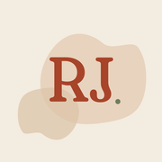
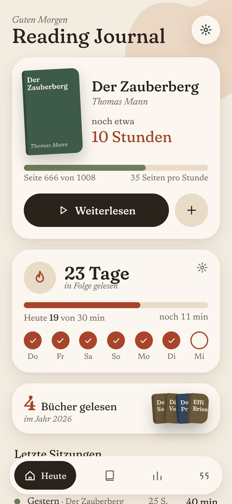
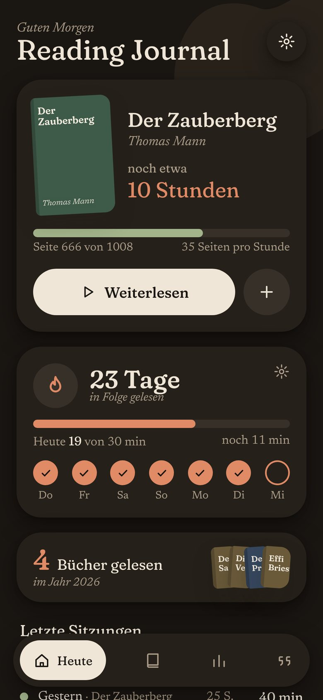
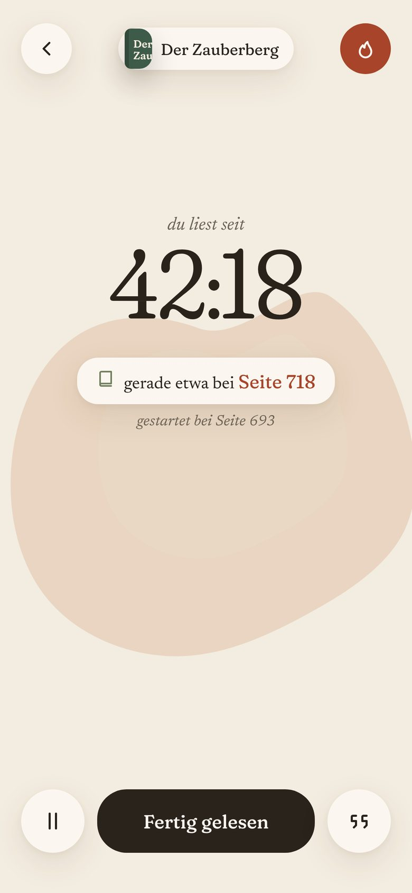
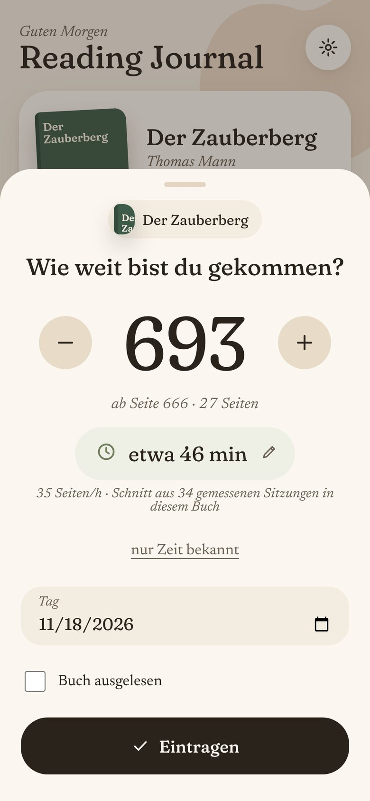
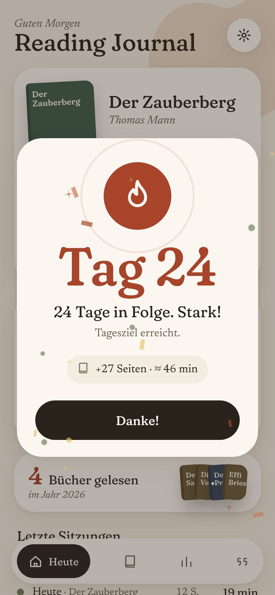
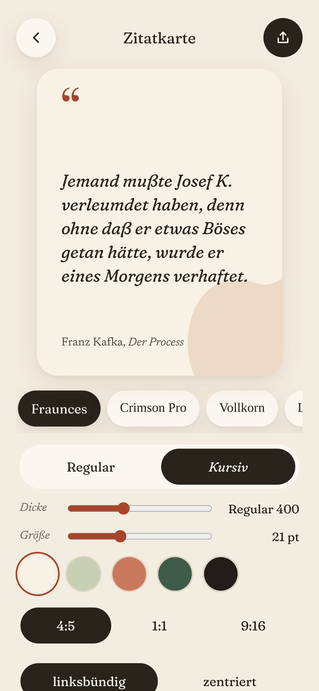
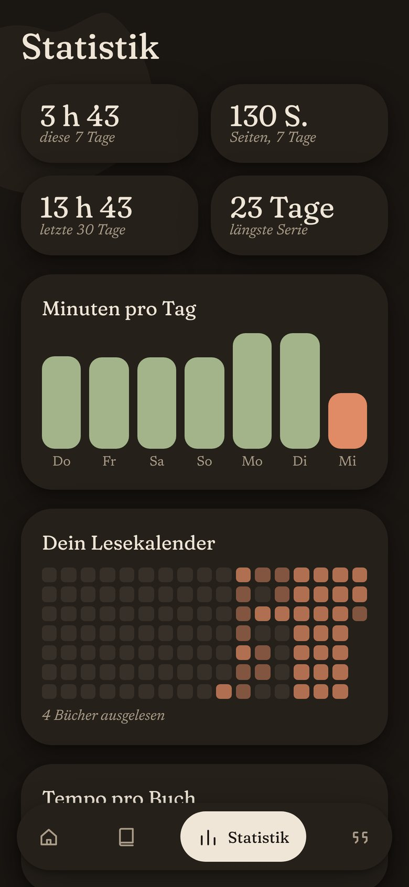

Reading JournalEin ruhiger, papierwarmer Lesetracker – für Lesesessions, die man gern festhält.A calm, paper-warm reading tracker – for reading sessions worth keeping.
Kostenlos · ohne Konto · ohne Werbung · für Android und iPhoneFree · no account · no ads · for Android and iPhone


Ein Tipp auf „Weiterlesen“ startet die Uhr. Der Timer läuft weiter, auch wenn du die App schließt, und zeigt, auf welcher Seite du ungefähr sein müsstest.One tap on “Continue reading” starts the clock. It keeps running when you close the app and shows roughly which page you should be on.
Wer mag, liest zu sanften Klängen: Lagerfeuer, Nieselregen oder warmes Rauschen – live erzeugt, ohne Loop-Schnitt.If you like, read to gentle sounds: campfire, drizzle or warm white noise – generated live, with no audible loop.

Reading Journal lernt aus deinen gemessenen Sitzungen, wie viele Seiten pro Stunde du in diesem Buch liest.Reading Journal learns from your timed sessions how many pages per hour you read in this book.

Lege dein Tagesziel in Minuten oder Seiten fest. Nach jedem Eintrag zeigt dir die App deine Serie – dezent am Anfang, mit Konfetti ab Tag 15 und richtig festlich ab Tag 30.Set a daily goal in minutes or pages. After every entry the app shows your streak – subtle at first, with confetti from day 15 and a real celebration from day 30.
Dazu: dein Lesetempo pro Session und wie viele Bücher du in diesem Jahr gelesen hast.Plus: your pace per session and how many books you've finished this year.

Halte Zitate während des Lesens fest und gestalte daraus Karten: 13 sorgfältig gewählte Schriften von Fraunces bis zur kalligrafischen Schreibschrift, stufenlose Dicke, kursiv oder aufrecht, fünf Farben, drei Formate.Save quotes while you read and turn them into cards: 13 carefully chosen typefaces from Fraunces to calligraphic script, adjustable weight, italic or upright, five colours, three formats.
Als Bild teilen – für Story, Status oder einfach fürs Fotoalbum.Share as an image – for stories, chats or your photo library.

Ein warmer Nachtmodus statt kaltem Blaulicht – automatisch oder per Hand. Die Statistik zeigt Minuten pro Tag, deinen Lesekalender, deine längste Serie und dein Tempo pro Buch.A warm night mode instead of cold blue light – automatic or manual. Stats show minutes per day, your reading calendar, your longest streak and your pace per book.

Alles liegt nur auf deinem Gerät. Kein Server, kein Tracking, keine Werbung.Everything stays on your device. No server, no tracking, no ads.
Strichcode scannen, ISBN tippen oder Titel suchen – Daten und Cover kommen von Open Library und Google Books.Scan the barcode, type the ISBN or search by title – data and covers come from Open Library and Google Books.
Mit einem Tipp nach Google Drive oder iCloud sichern – die App erinnert dich freundlich daran.Back up to Google Drive or iCloud with one tap – the app gently reminds you.
Reading Journal ist eine Web-App: kein App Store nötig. Einmal hinzugefügt, startet sie im Vollbild und funktioniert auch offline.Reading Journal is a web app – no app store needed. Once added, it opens full-screen and works offline.
Tipp: Starte die App danach immer über das Icon – so bleiben deine Daten dauerhaft gespeichert.Tip: always launch the app from its icon afterwards – that keeps your data stored permanently.